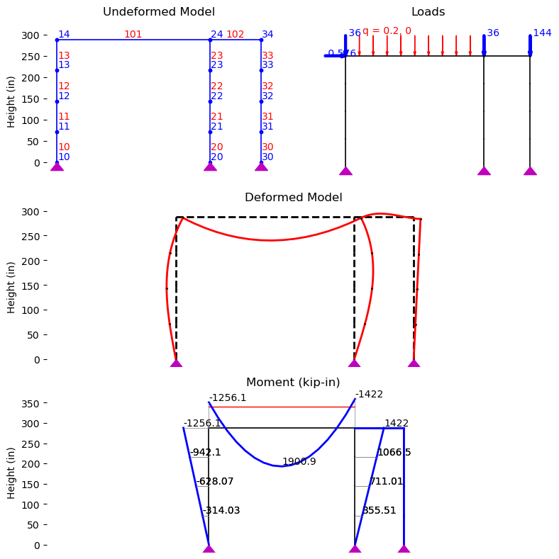

By Hossein Karagah
© Copyright 2025 GNU GENERAL PUBLIC LICENSE.
{kind=link}
import os
import sys
sys.path.append(os.path.abspath("../../../assets/modules/"))
from shapes import AISC_WSection
from materials import BilinearA992Steel
from copy import deepcopy
import matplotlib.pyplot as plt
---------------------------------------------------------------------------
ModuleNotFoundError Traceback (most recent call last)
Cell In[1], line 4
2 import sys
3 sys.path.append(os.path.abspath("../../../assets/modules/"))
----> 4 from shapes import AISC_WSection
5 from materials import BilinearA992Steel
6 from copy import deepcopy
File C:\Hossein\portfolio\hkaragah.github.io\assets\modules\shapes.py:19
17 import matplotlib.pyplot as plt
18 from dataclasses import dataclass, field
---> 19 import pandas as pd
20 import os
21 from functools import lru_cache
ModuleNotFoundError: No module named 'pandas'
# Define steel material properties
A992 = BilinearA992Steel()
# Define beam and column shapes
W12X65 = AISC_WSection("W12X65") # Columns
W18X40 = AISC_WSection("W18X40") # Beams
import openseespy.opensees as ops
import vfo.vfo as vfo
ops.wipe()
ops.model('basic', '-ndm', 2, '-ndf', 3)
nSEG = 4
colLength = 24 * 12.0 # inch, Height of the columns
L_beam1 = 30 * 12.0 # inch, Length of the beam in span 1
L_beam2 = 10 * 12.0 # inch, Length of the beam in span 2
base_nodeTags = [10, 20, 30]
base_XCoords = [0, L_beam1, L_beam1 + L_beam2]
nodeTags= deepcopy(base_nodeTags) # keep track of all node tags
bm_nodeTags = [] # Store beam node tags
# Define nodes
for base_nodeTag, base_XCoord in zip(base_nodeTags, base_XCoords):
ops.node(base_nodeTag, base_XCoord, 0)
ops.fix(base_nodeTag, 1, 1, 0) # pinned base nodes
for i in range(1, nSEG + 1):
new_nodeTag = base_nodeTag + i
ops.node(new_nodeTag, base_XCoord, i * colLength/nSEG)
nodeTags.append(new_nodeTag)
bm_nodeTags.append(new_nodeTag)
# ops.equalDOF(bm_nodeTags[0], *bm_nodeTags[1:], 1)
# Define coordinate transformation (Options: Linear, PDelta, Corotational)
coordTransf = "Linear"
transfTag = 1
ops.geomTransf(coordTransf, transfTag)
# Define sections
col_secTag, bm_secTag = 1, 2
ops.section('Elastic', col_secTag, A992.E/1e3, W12X65.A, W12X65.Ix, A992.G/1e3, W12X65.alphaY)
ops.section('Elastic', bm_secTag, A992.E/1e3, W18X40.A, W18X40.Ix, A992.G/1e3, W18X40.alphaY)
# Define elements
col_eleTags = [] # keep track of all column element tags
# Define column elements
for base_nodeTag in base_nodeTags:
for i in range(nSEG):
eleTag = base_nodeTag + i
col_eleTags.append(eleTag)
eleNodes = [base_nodeTag + i, base_nodeTag + (i + 1)]
ops.element('elasticBeamColumn', eleTag, *eleNodes, col_secTag, transfTag)
# Define beam elements
bm_eleTags = [101, 102]
ops.element('elasticBeamColumn', bm_eleTags[0], base_nodeTags[0] + nSEG, base_nodeTags[1] + nSEG, bm_secTag, transfTag)
ops.element('elasticBeamColumn', bm_eleTags[1], base_nodeTags[1] + nSEG, base_nodeTags[2] + nSEG, bm_secTag, transfTag, '-release', 3)
# moment release: 0=no release (default), 1=release at I, 2=release at J, 3=release at I and J
# Define time series
timeSeriesTag = 1
ops.timeSeries("Linear", timeSeriesTag)
# Define load pattern
patternTag = 1
ops.pattern("Plain", patternTag, timeSeriesTag)
# Define loads
ops.load(base_nodeTags[0] + nSEG, 0.576, -36.0, 0.0)
ops.load(base_nodeTags[1] + nSEG, 0.0, -36.0, 0.0)
ops.load(base_nodeTags[2] + nSEG, 0.0, -144.0, 0.0)
ops.eleLoad('-ele', bm_eleTags[0], '-type', '-beamUniform', -2.40 / 12, 0.0) # kip/in, uniform load in y-direction
# Define analysis parameters
ops.system('BandGen')
ops.numberer('Plain') # Plain, RCM, AMD
ops.constraints("Plain") # Plain, Transformation
ops.algorithm('Newton') # Linear, Newton, KrylovNewton, KrylovNewtonWithInertia, ...
ops.test('NormDispIncr', 1.0e-6, 10)
numIncr = 10
ops.integrator('LoadControl', 1.0/numIncr) # LoadControl, DisplacementControl, FixedNumIter
ops.analysis('Static') # Static, Transient, VariableTransient, PFEM
# ops.database('File', 'aisc_example_c1a')
ops.recorder('Node', '-file', 'node_disp.out', '-time', '-node', *bm_nodeTags, '-dof', 1, 2, 3, 'disp')
ops.recorder('Node', '-file', 'reaction.out', '-time', '-node', *base_nodeTags, '-dof', 1, 2, 3, 'reaction')
ops.recorder('Element', '-file', 'element.out', '-time', '-ele', *bm_eleTags, 'force')
vfo.createODB(model='aisc_example_c1a', loadcase='static')
flag = ops.analyze(numIncr)
if flag != 0:
print("Analysis failed!")
else:
print("Analysis completed successfully.")
Analysis completed successfully.
import matplotlib.gridspec as gridspec
import opsvis as opsv
fig= plt.figure(figsize=(8, 8))
gs = gridspec.GridSpec(3, 1, figure=fig)
gs0 = gridspec.GridSpecFromSubplotSpec(1, 2, subplot_spec=gs[0])
ax_model = fig.add_subplot(gs0[0])
ax_load = fig.add_subplot(gs0[1])
ax_defo = fig.add_subplot(gs[1])
ax_moment = fig.add_subplot(gs[2])
def remove_borders(ax):
for spine in ax.spines.values():
spine.set_visible(False)
# Plot undeformed model
opsv.plot_model(
ax=ax_model,
offset_nd_label=True
)
ax_model.set_ylabel("Height (in)")
ax_model.set_xticks([])
ax_model.set_title("Undeformed Model")
remove_borders(ax_model)
# Plot loading
opsv.plot_load(ax=ax_load)
ax_load.set_xticks([])
ax_load.set_yticks([])
ax_load.set_title("Loads")
remove_borders(ax_load)
# Plot deformed model
def_sfac = opsv.plot_defo(
ax=ax_defo,
fmt_undefo={'color': 'black', 'linestyle': '--', 'linewidth': 2},
fmt_defo={'color': 'red', 'linewidth': 2}
)
ax_defo.set_xticks([])
ax_defo.set_ylabel("Height (in)")
ax_defo.set_title("Deformed Model")
remove_borders(ax_defo)
# Plot moment diagram
m_sfac = 0.05
opsv.section_force_diagram_2d(
sf_type='M',
sfac=m_sfac,
fmt_secforce1={'color': 'blue', 'linewidth': 2},
fmt_secforce2={'color': 'grey', 'linewidth': 0.5},
ref_vert_lines=False,
ax=ax_moment
)
ax_moment.set_xticks([])
ax_moment.set_ylabel("Height (in)")
ax_moment.set_title("Moment (kip-in)")
remove_borders(ax_moment)
fig.tight_layout()
plt.show()

print("Floor lateral displacements:")
for nodeTag in bm_nodeTags:
print(f" Node {nodeTag}: {ops.nodeDisp(nodeTag, 1):.3f} in")
print("\nBase reactions:")
for nodeTag in base_nodeTags:
print(f" Node {nodeTag}: Rh={ops.nodeReaction(nodeTag, 1):.3f} kip")
print("\nBeam end moments:")
for eleTag in bm_eleTags:
print(f" Element {eleTag}: Mi={ops.eleForce(eleTag, 3)/12:.1f}, Mj={ops.eleForce(eleTag, 6)/12:.1f} kip-ft")
Floor lateral displacements:
Node 14: 0.232 in
Node 24: 0.227 in
Node 34: 0.227 in
Base reactions:
Node 10: Rh=4.362 kip
Node 20: Rh=-4.938 kip
Node 30: Rh=0.000 kip
Beam end moments:
Element 101: Mi=104.7, Mj=-118.5 kip-ft
Element 102: Mi=0.0, Mj=0.0 kip-ft